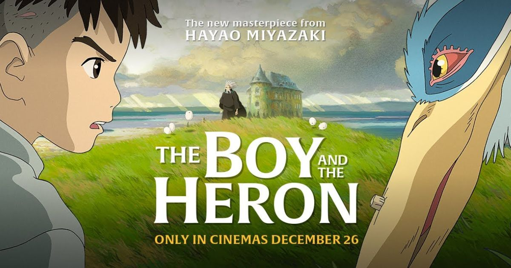

“The Boy and the Heron” – likely Studio Ghibli’s final film before the retirement of Hayao Miyazaki, their director of almost forty years and the mastermind behind films such as Spirited Away, My Neighbour Totoro, Howl’s Moving Castle and Kiki’s Delivery Service. As a massive fan of Studio Ghibli and Japanese animation in general, I had been ecstatic to watch this movie in theatres since I heard of its announcement several years ago, yet I left the cinema wondering what I’d just viewed. Despite the breath-taking animation, incredible soundtrack and interesting, likeable characters, I struggled to grasp what exactly this film was actually all about. Had I not paid enough attention? Had something been lost in mistranslation? Or was it truly meant to not be fully understood? After some further analysis I came to appreciate “The Boy and the Heron” far more.
Inspired by the 1937 Japanese novel “How Do You Live? “ the movie focuses on themes such as growing up, grief, war and acceptance. The story follows a young boy named Mahito who has moved to the countryside to stay with his pregnant aunt, Natsuko, after watching the traumatic death of his mother in a fire during the second world war. During his time in the countryside, he meets a mysterious heron who claims his mother is still alive and convinces Mahito to follow him into a strange tower which transports them both through a magical world shared by both the living and the dead in order to find her.
I’ve come to learn that the film can be interpreted in many ways, not being as simple as just a fantasy adventure. My personal favourite interpretation being that the film is a tribute to Miyazaki himself and his works over the past sixty years. The character design of Mahito has a stark resemblance to Conan from “Future Boy Conan,” the first ever TV show that Miyazaki helped animate. References to other Ghibli productions are scattered throughout, being far more prevalent than just mere `Easter-eggs.’ For example, the maids helping Natsuko look very similar to characters including Sophie from Howl’s moving castle and the not so friendly Yubaba from Spirited Away. The whimsical “Warawara” who represent rebirth within the land of the living and the dead resemble the “Komada” creatures from Princess Mononoke. As well as this, the scene at the beginning of the film where Mahito and the heron trek through the forest to reach the tower is almost identical to the scene from My Neighbour Totoro in which Mei wanders through the forest to meet Totoro.
[spoiler alert] At the end of the movie, Mahito meets his great grand-uncle, the wizard-like figure who created this magical world as well as building the tower in the countryside that originally transported Mahito there. It is revealed that in-order to sustain his kingdom, the great grand-uncle has to balance thirteen wooden blocks. This likely symbolises the thirteen films that Miyazaki directed with Studio Ghibli. However the great grand-uncle (much like Miyazaki) acknowledges that he is now old and can’t keep up his role for much longer and therefore needs a successor who he sees within Mahito. Before being able to accept the blocks and the role, the Parakeet King (An antagonist within the film who represents violence and authority) steals them away and tries to stack them himself, a task in which he fails miserably. However, the Parakeet King doing this leaves only one block left for Mahito. Miyazaki has had a history of never finding a successor as his children have come to leave the creative process and his closest colleagues have either retired or left the company. Mahito only having one block shows us that although no one can ever be the next Hayao Miyazaki, we still have the opportunity to create incredible worlds for ourselves and be the next generation of storytellers. Despite all of this, Mahito finally turns down the offer from his great grand-uncle stating that he is too imperfect to be trusted with such a task, instead wishing to return to the real world and accept his mothers death rather than keep chasing after a fantasy. This teaches us that yes, media such as films or books can be a great means of escapism and can help us learn more about ourselves, however we still have to face the harshness and cruelties of reality – never delving too far into the fantasy world ourselves.
Though there has been no official announcement yet, The Boy and the Heron will likely soon be available to stream on Netflix and Apple TV.
